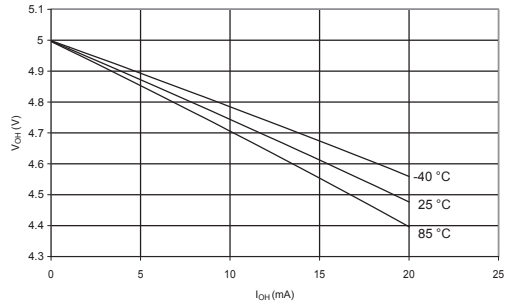
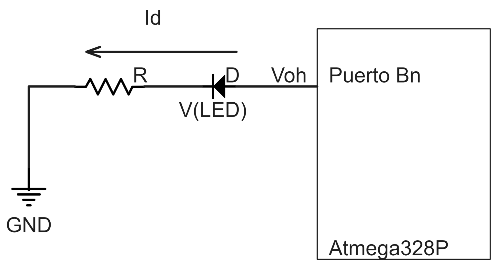
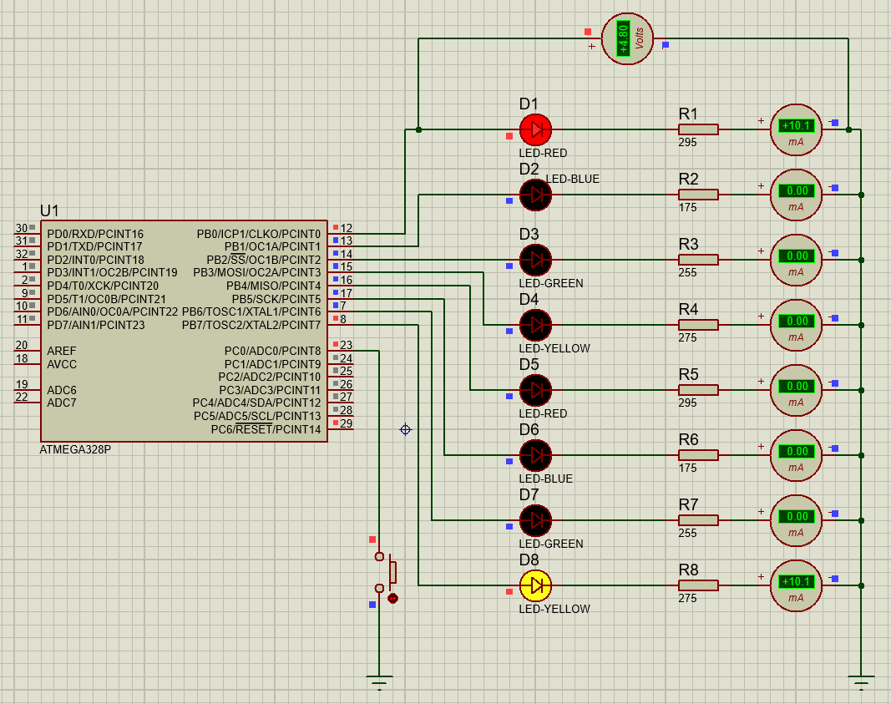
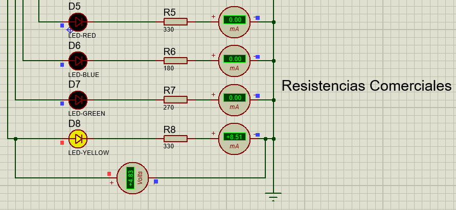
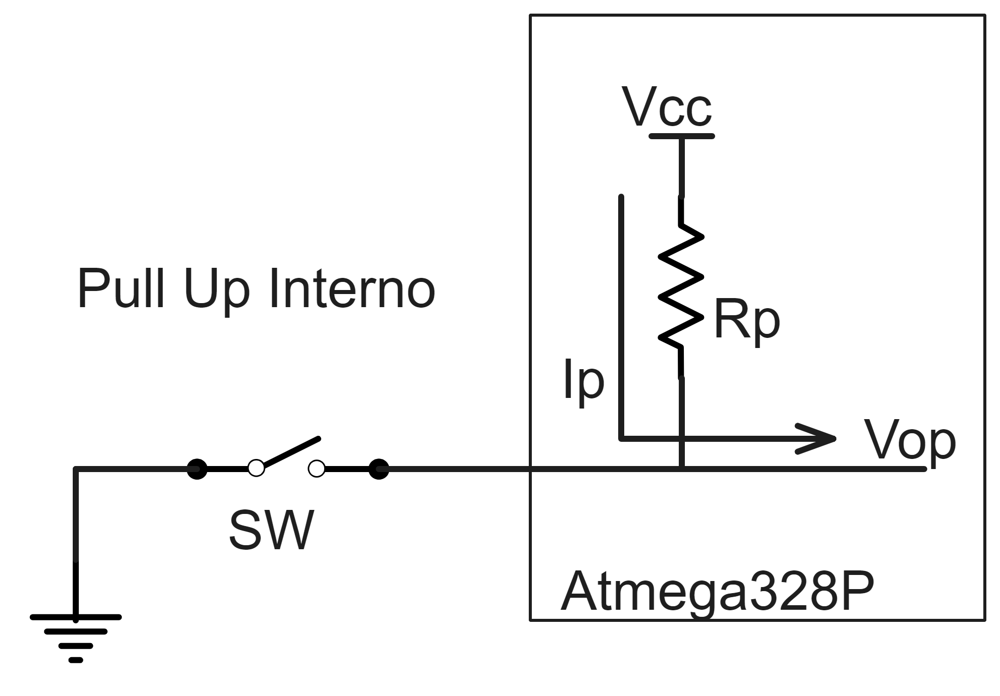
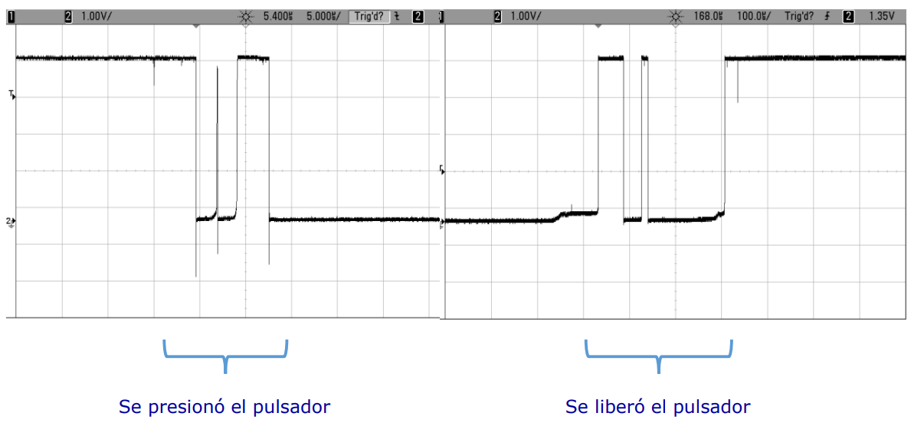
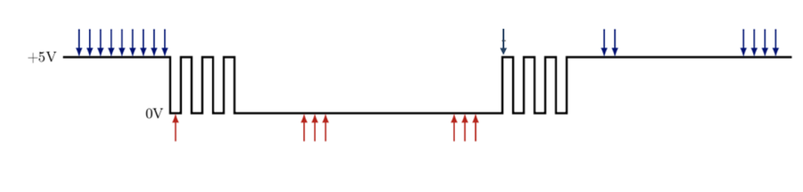

CDyM-TP1
Table of Contents
1. Control de periféricos LED externos con puertos de entrada/salida
2. Conexión de los LEDs
2.1. Enunciado
Se desea conectar 8 diodos LED de diferentes colores al puerto B del MCU y encenderlos con una corriente de 10mA en cada uno. Realice el esquema eléctrico de la conexión en Proteus. Calcule la resistencia serie para cada color teniendo en cuenta la caída de tensión VLED (rojo=1.8V, verde=2.2V, amarillo=2.0V, azul=3.0V). Verifique que la corriente por cada terminal del MCU no supere la capacidad de corriente de cada salida y de todas las salidas del mismo puerto en funcionamiento simultáneo.
2.2. Interpretación
Dado el microcontrolador ATmega328P, se debe conectar 8 diodos LED de 4 diferentes colores (rojo, verde, amarillo y azul) al su puerto B. Para esto se calcularán las resistencias necesarias, teniendo como dato la corriente que circula por cada uno de los LEDS (10mA) y la caída de tensión de cada que varía dependiendo el color. Teniendo en cuenta la tensión de salida del microcontrolador, es crucial asegurar que la corriente a través de cada terminal del no exceda su capacidad máxima de corriente de salida, así como también verificar que la suma de las corrientes en todas las salidas del puerto B no supere la capacidad máxima total. Por último, se debe realizar un esquema eléctrico en Proteus de la conexión pedida utilizando los LEDS y las resistencias calculadas.
2.3. Resolución
Para el cálculo de cada una de las resistencias se utilizaron los siguientes datos:
- Caída de Tensión de cada LED
- Rojo = 1.8V
- Verde = 2.2V
- Amarillo = 2.0V
- Azul = 3.0V
- Rojo = 1.8V
- Intensidad de corriente nominal (corriente que circula por cada LED), 10mA.
- Tensión de salida del Microcontrolador (4.75 V).
La tensión de salida del Microcontrolador se obtuvo mirando la figura extraída de la hoja de datos correspondiente al MCU “Voltajes de salida en pines de entrada/salida y Corriente (Vcc = 5V)”. Se tomó un valor aproximado de 4.75 V ya que la corriente es de 10mA y suponiendo una temperatura ambiente de 25°C.

VOH vs IOH

PULL-UP
Sabiendo por ley de Ohm que \( R_{\text{LED}} = \frac{V_{\text{OH}} - V_{\text{LED}}}{I_{\text{OH}}} \), calculamos:
\[ R_{\text{rojo}} = \frac{4.75\text{V} - 1.8\text{V}}{10\text{mA}} = 295\Omega \]
\[ R_{\text{verde}} = \frac{4.75\text{V} - 2.2\text{V}}{10\text{mA}} = 255\Omega \]
\[ R_{\text{amarillo}} = \frac{4.75\text{V} - 2.0\text{V}}{10\text{mA}} = 275\Omega \]
\[ R_{\text{azul}} = \frac{4.75\text{V} - 3.0\text{V}}{10\text{mA}} = 175\Omega \]
Se debe verificar que la corriente por cada terminal del MCU no supere la capacidad de corriente de cada salida. Para ello, vemos que en la hoja de datos del microcontrolador ATmega328p, más precisamente de la sección 28.1 “Absolute Maximum Ratings”, nos dice que la corriente máxima de salida individual es de 40mA, cuyo valor es menor a los 10mA utilizados.
Además, sabemos que la corriente total que circula por el puerto B en caso de que los 8 LEDS estén encendidos al mismo tiempo sería de 80mA, valor que es menor a los límites establecidos (100mA y 150mA) especificados en la sección 28.2 “DC Characteristics” de la hoja de datos.

LEDs
Los valores de las resistencias nominales serían para:
- Led rojo : 330
- Led verde: 270
- Led amarillo: 330
- Led azul: 180
De esta forma nos aseguramos que los valores de corriente estén por debajo de los 10mA, siendo resistencias lo suficientemente cercanas a las ideales calculadas previamente.

Resistores
3. Conexión del Pulsador
3.1. Enunciado
Se desea conectar un pulsador a una entrada digital del MCU y detectar cuando el usuario presiona y suelta el pulsador. Muestre el esquema de conexión y determine la configuración del MCU que corresponda. Investigue sobre el efecto de rebote que producen los pulsadores e implemente un método para eliminar este efecto en su algoritmo de detección (puede encontrar información útil en la bibliografía).
3.2. Interpretación
En este ejercicio se debe mostrar el esquema de conexión usado para conectar un pulsador al microcontrolador. Se debe desarrollar un código de programa que detecte cuando se oprime y se suelta el pulsador, como así también un método para eliminar el efecto rebote, que se produce al hacer falsos contactos en el interruptor.
3.3. Resolución
Existen dos maneras de conectar un pulsador a una entrada del MCU:
- La primera es conectar el pulsador a Vcc y una resistencia pull-down en la otra parte, es decir como se ve en la figura 2. Lo que hace esto es dar un valor bajo en caso que el pulsador esté sin presionar y un valor alto en caso contrario.
- La segunda forma de conectar al pulsador es inversa a la mencionada anteriormente, el pulsador es conectado a GND y se utiliza una resistencia pull-up, como se ve en la figura 3. En este caso, cuando el pulsador no esté presionado se tiene un valor alto, y un valor bajo cuando lo esté.

Pull-up Interno
En la práctica usaremos la configuración con la resistencia pull-up, ya que el microcontrolador ATmega328P cuenta con este tipo de resistencias integradas. Por lo que se debe conectar el pulsador a GND y activar el pull-up interno, y así evitamos tener que añadir una resistencia adicional.
Para conectar el pulsador al microcontrolador usamos el pin 0 del puerto C como entrada.
Cuando se conecta un pulsador puede producirse lo que se conoce como efecto rebote. Lo que hace este efecto es que cuando se presiona o suelta el pulsador se produce una variación en la señal en la que alterna entre el valor alto y bajo. Esta variación puede afectar en la ejecución correcta del programa ya que devuelve valores erróneos a los esperados.

Rebote
Para resolver este problema, se pueden usar tanto técnicas de hardware como de software. Aquí utilizaremos una técnica por software que consiste en buscar N lecturas secuenciales estables del interruptor, donde N es un número que va desde 1 (sin ningún rebote) hasta aparentemente infinito. Generalmente, el código detecta una transición y luego comienza a incrementar o disminuir un contador, releyendo cada vez la entrada, hasta que N alcanza un conteo presumiblemente seguro y sin rebotes. Si el estado no es estable, el contador se reinicia a su valor inicial.

Polling
Esto último en pseudocódigo quedaría:
CONSTANTES:
- Intervalo de lectura del hardware en milisegundos
- Tiempo mínimo estable para considerar una tecla como presionada
- Tiempo mínimo estable para considerar una tecla como liberada
FUNCIÓN para manejar el antirrebote de la tecla:
Crear un contador para el tiempo de estabilización
Inicializar valores de salida de la función
Si el estado del pin coincide con el estado antirrebote actual
Actualizar el temporizador según el estado actual
Sino
Si Temporizador expirado
Aceptar cambio de estado
Restablecer el temporizador según el nuevo estado
FIN FUNCIÓN
4. Secuencia de Encendido
4.1. Enunciado
Realice el programa para que el MCU encienda los LEDs del puerto B con la siguiente secuencia de encendido repetitiva: b0 y b7 – b1 y b6 – b2 y b5 – b3 y b4. Luego, cuando el usuario presione y suelte el pulsador debe cambiar a la secuencia: b7-b6-b5-b4-b3-b2-b1-b0. Si presiona y suelta nuevamente vuelve a la secuencia original y así sucesivamente. Dibuje el diagrama de flujo y el esquema de conexión completo en Proteus.
4.2. Interpretación
Este ejercicio busca escribir un programa que permita realizar secuencias de encendido de LEDs según se indica. El pulsador debe cambiar la secuencia de encendido. Para desarrollar el ejercicio se tendrá en cuenta la configuración previa de los LEDS en puerto B y del pulsador en el puerto C.
4.3. Resolución
Para el desarrollo del código primero se debe considerar la inicialización de los puertos de entrada y salida, y luego la implementación de la secuencia deseada.
La secuencia deseada en el enunciado tiene dos partes, la primera en la cual se deben prender dos LEDs a la vez en el orden especificado, y la segunda parte que consiste en prender un solo LED desde la posición 7 a la 0.
Diagrama de flujo:
Diagrama de Flujo
Para llevar a cabo el desarrollo del código en C se utiliza la estructura de datos estados, como se ve en el pseudocódigo:
INICIALIZACIÓN
Definir puertos de entrada y salida
Inicializar LEDS apagados
Inicializar Estado Inicial
LOOP PRINCIPAL
Si pulsador presionado y liberado
Cambiar Estado de Secuencia
Fin Si
Ejecutar Secuencia
FIN LOOP
Simulación en Proteus